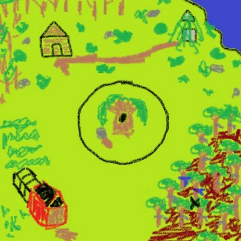
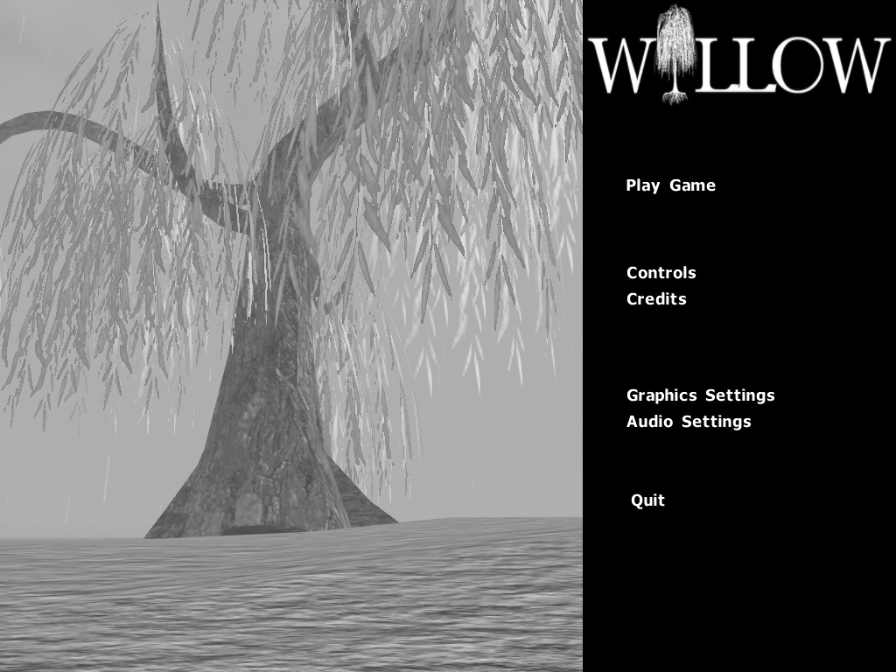
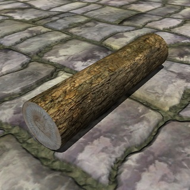

---
---
<!DOCTYPE html PUBLIC "-//W3C//DTD XHTML 1.0 Transitional//EN" "http://www.w3.org/TR/xhtml1/DTD/xhtml1-transitional.dtd">

<html xmlns="http://www.w3.org/1999/xhtml">

  <head>
  
    {% include chrisw/header.html %}
    <?php require(getenv("JQUERY_UI")) ?>
    
    <link rel = "stylesheet" type = "text/css" href = "willow.css" />
    
    <script type = "text/javascript">
      $(document).ready(function() {
      
        init_slider("#flowerpots_redslider");
        init_slider("#flowerpots_greenslider");
        init_slider("#well_blueslider");
        init_slider("#fireplace_redslider");
        init_slider("#willow_colorslider");
      });
    </script>

    <title> Willow </title>
  
  </head>
  
  <body>

    <div id = "global_mainarea">
      
      {% include chrisw/title.html %}
      {% include chrisw/navbar.html %}
      
      <div id = "subpage_content">
      
        <h2> Color Shader </h2>
      
        <?php place_slider("flowerpots_redslider", "media/FlowerPots-Gray.jpg", "media/FlowerPots-Red.jpg", "Red Unlocked"); ?>
        <?php place_slider("flowerpots_greenslider", "media/FlowerPots-Gray.jpg", "media/FlowerPots-Green.jpg", "Green Unlocked"); ?>
        <?php place_slider("well_blueslider", "media/Well-Gray.jpg", "media/Well-Blue.jpg", "Blue Unlocked"); ?>
        <?php place_slider("fireplace_redslider", "media/Fireplace-Gray.jpg", "media/Fireplace-Red.jpg", "Red Unlocked"); ?>
        <?php place_slider("willow_colorslider", "media/Willow-Gray.jpg", "media/Willow-Colors.jpg", "Red, Green & Blue Unlocked"); ?>

        <h2> Media </h2>
        
        <div style = "width: 610px; text-align: center;">
        
          <br>
          
          Map Sketch<br><br>

          <br>
          
          Main Menu<br><br>
          
        </div>
          
        <h2> Inventory </h2>
        
        <div style = "width: 610px; text-align: center;">
          
          
          
          
          
          
          
        
        </div>
  
      </div>
      
      {% include willow/project_navigation.html %}
    
    </div>
    
    {% include chrisw/footer.html %}
    
  </body>

</html>